Portraiture, meetings and conventions, trade fairs, events and ceremonies, the reproduction of artworks, commercial and corporate photography. We approach every project with passion.
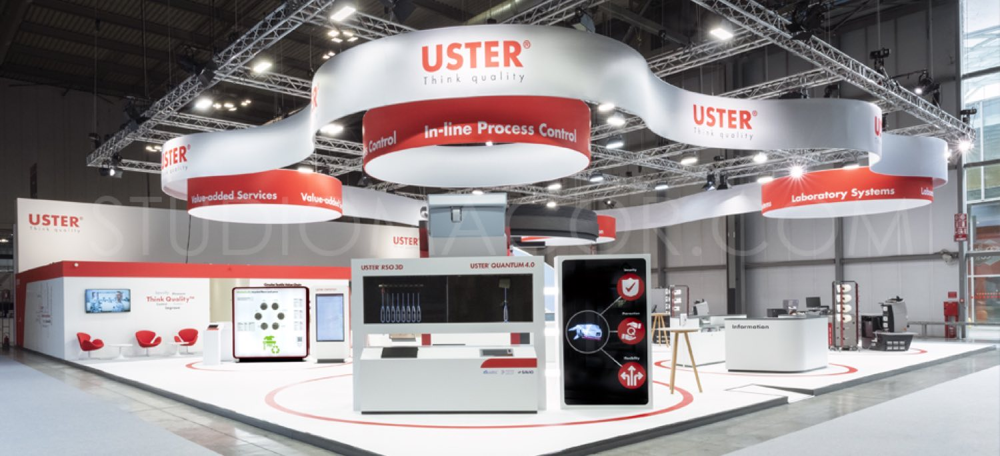
Available across Lombardy, the surrounding regions and Switzerland.
Individual and corporate portraits, in the studio or at your own premises.
PeopleMeetings, conventions and roundtables, covered from opening to close.
CorporateStands, booths and the life of the show floor, for exhibitors and organisers.
CorporateCeremonies documented with the same care given to commercial work.
PrivateFaithful reproduction of artworks, for catalogues, archives and galleries.
ReproductionInteriors and exteriors, for studios, developers and property owners.
CommercialProducts and industrial settings, shot with full control of the light.
CommercialLong form reportage that follows a project, a place or a process over time.
ReportageDamaged and ageing photographs brought back and preserved.
Archive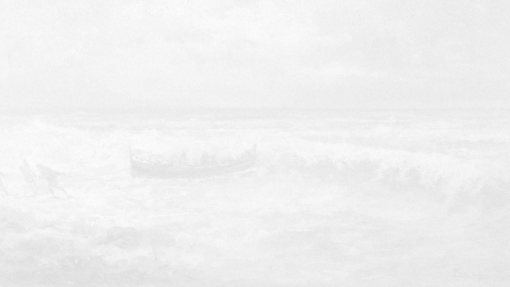
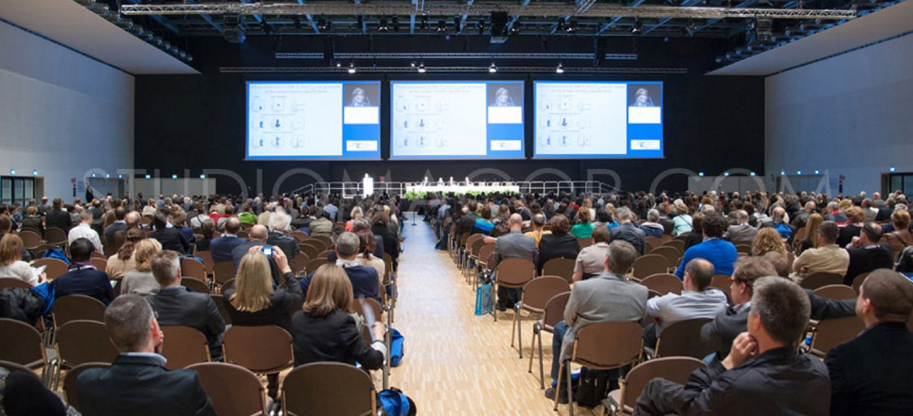
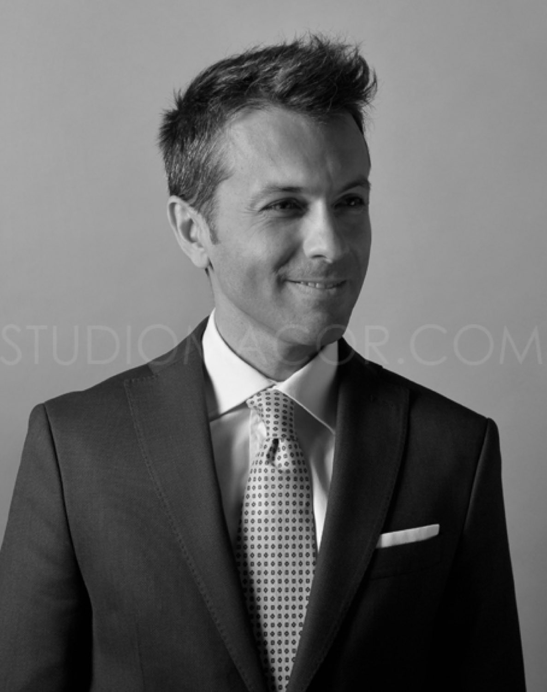
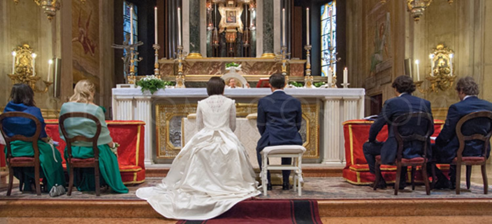
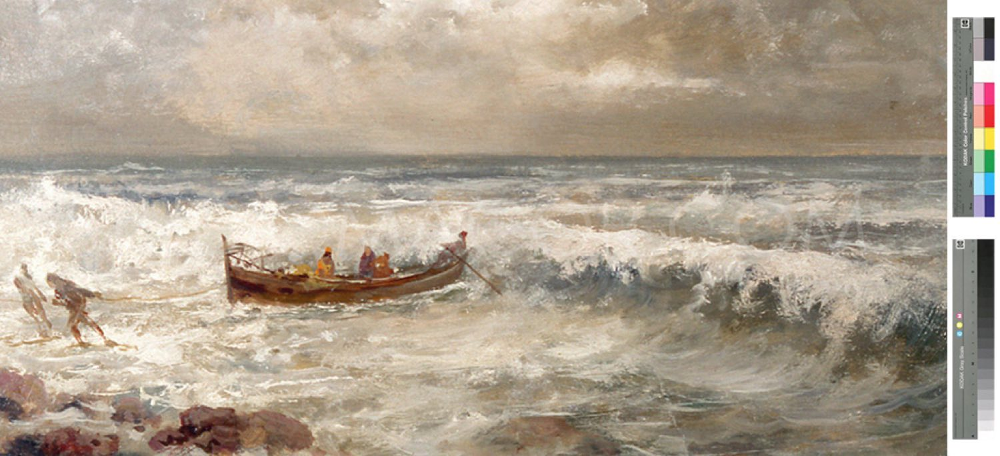
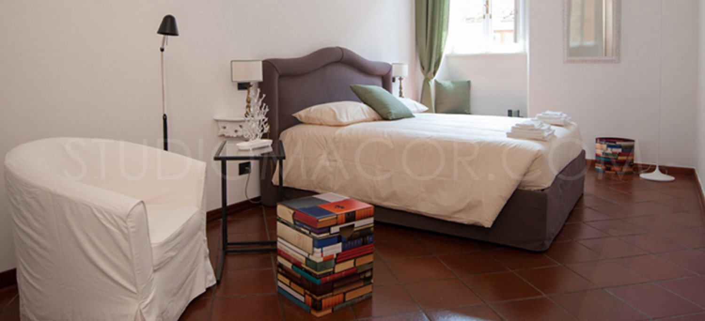
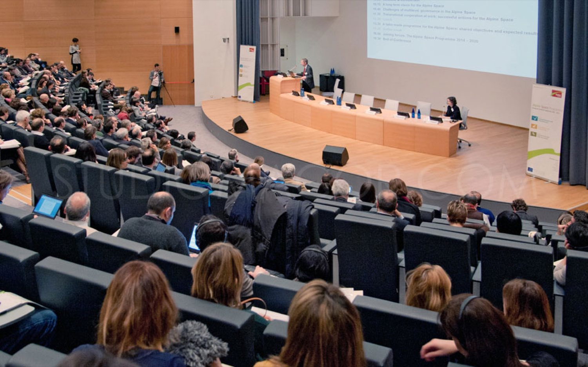
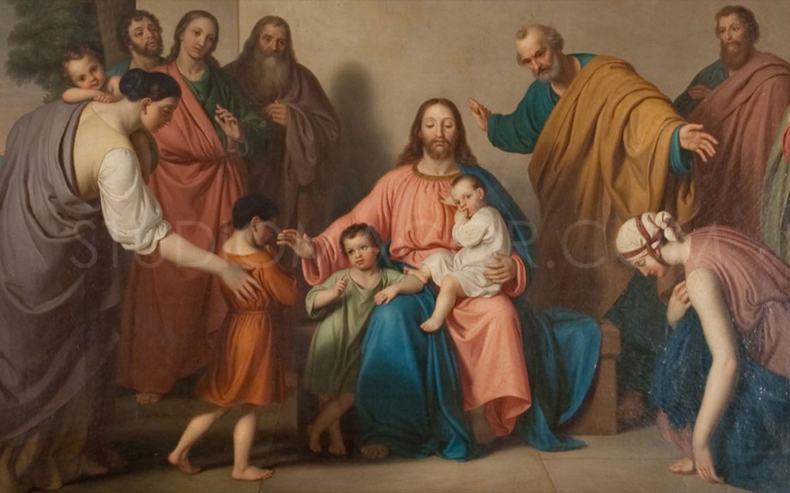
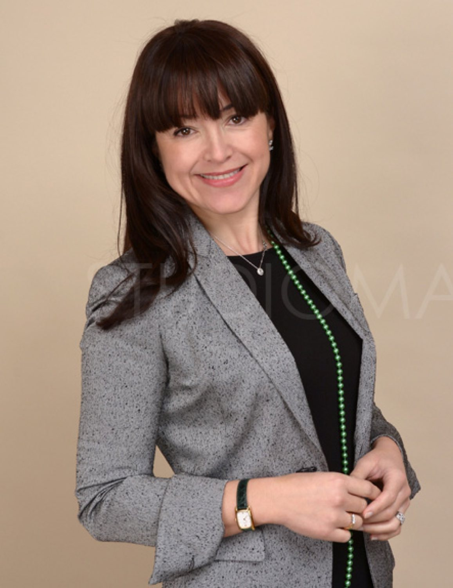
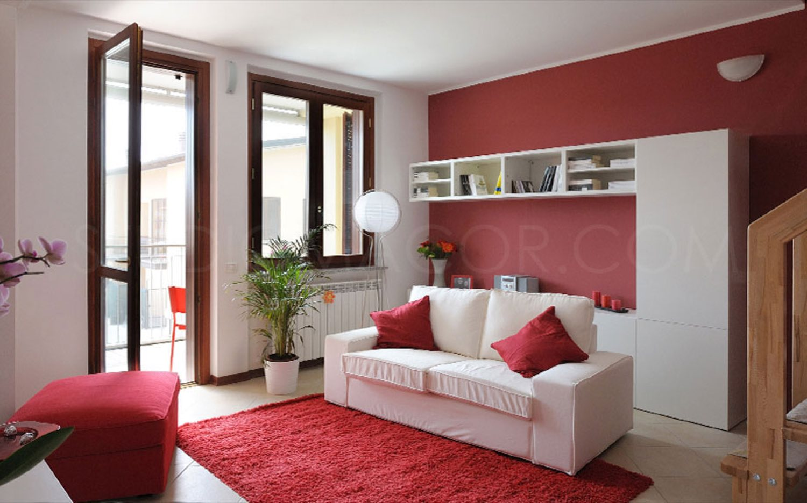
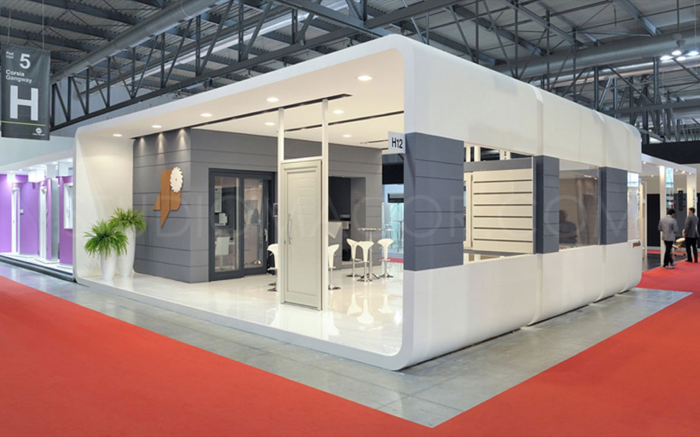
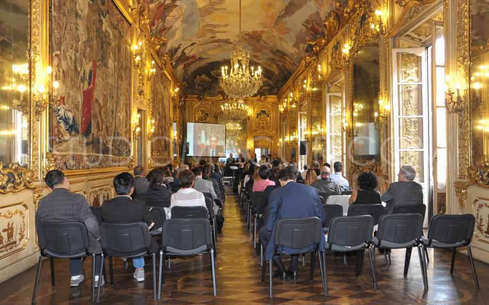
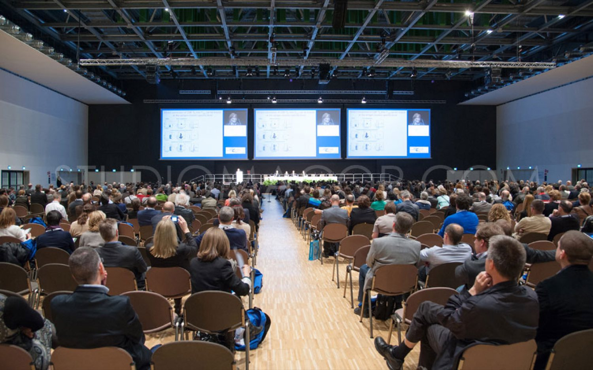
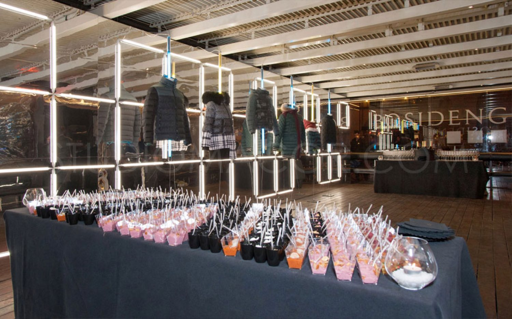
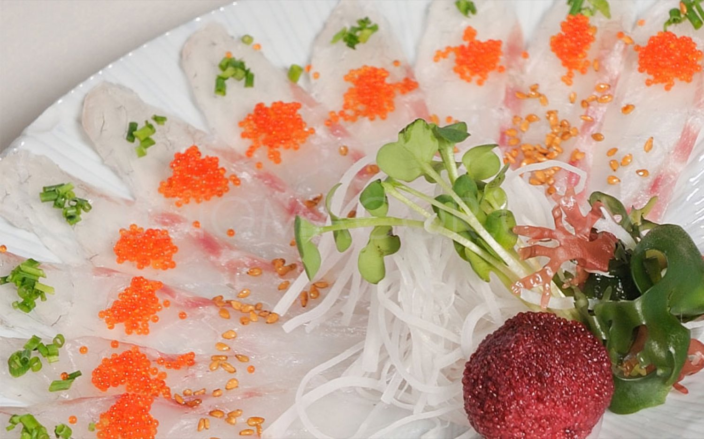
The studio is in via Vespri Siciliani 12, outside Area C and the ZTL of central Milan, so you can drive straight to it. It is accessible to people with disabilities.
Experience, professionalism and a focus on client needs are our strong points.
Call, write, or send a short brief. You will get availability and a quote.